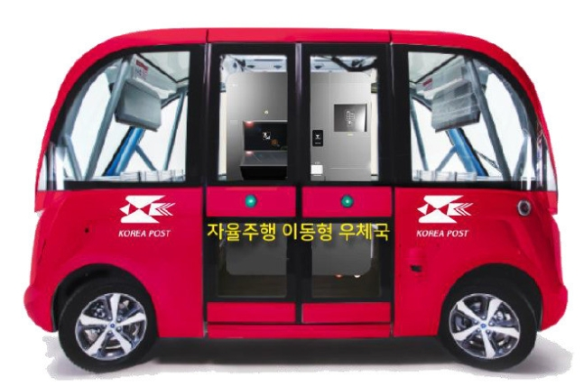

* 이달의 뉴스 *
우체국 택배, 집앞 무인 자율주행차에 넣기만 하면 OK (한겨레, 2020.05.28)
우정사업본부, 오는 10월부터 시범운용 예정
무인 자율주행 이동우체국, 우편물 배달로봇, 집배원 추종로봇
세 가지 장비 통해 비대면 우편물류 서비스체계 구축키로

“우체국앱으로 택배를 주문하면 약속시간에
‘무인 자율주행 이동우체국’이 집 앞에 당도한다. 고유번호로 차량 문을 열고 택배를 무인접수해 보낸다.
택배를 받을 때도 마찬가지로, 집 앞에 도착한 ‘무인 자율주행 이동우체국’ 차량 문을 열고 물건을 꺼내면 된다.”
과학기술정보통신부 우정사업본부가 이르면 오는 10월부터 시범운용할 예정이라고 밝힌 ‘무인 자율주행 이동우체국’ 서비스의 미래 모습이다.
우정사업본부는 28일 ‘자율주행 우편물류서비스 기술개발’ 착수보고회를 열어 인공기능과 자율주행 기술을 우편물류서비스 기술개발에 본격 나선다고 밝혔다.
쿠팡 등 대형 유통물류센터를 통한 코로나19 감염확산이 문제되고 있는 상황에서 사람간 직접 접촉이 없는
비대면(언택트) 서비스 요구가 높은 상황에서 미래 물류서비스를 혁신하기 위한 노력이다.
뉴스전문보기
스터디그룹WEB INDEX 페이지로 돌아가기